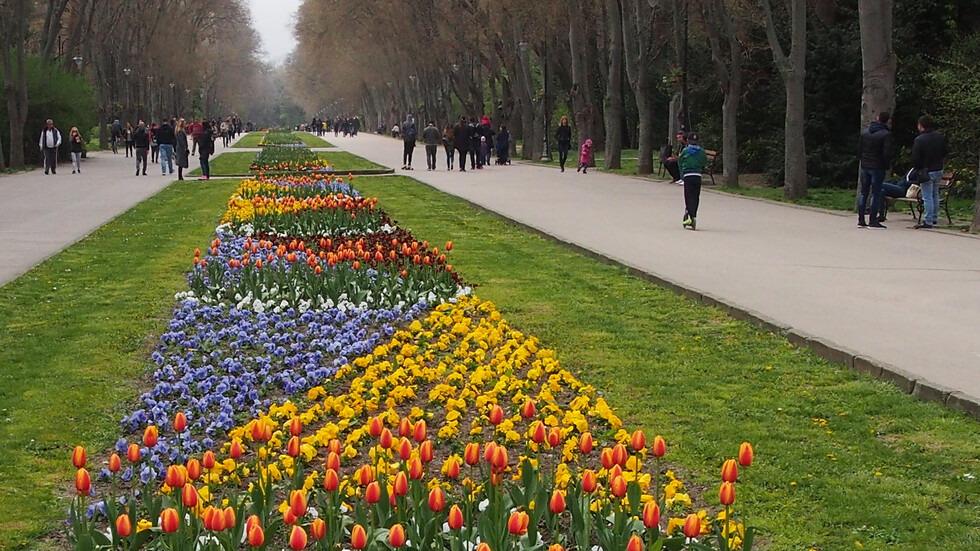

17-годишен, за сега! Уча в ПМГ "Христо Смирненски" както знаете. Е, тук няма да има чак такава информация, но пък да си го кажа - хаха. Тук ще качвам моите, както обещах, любими храни и общо взето снимки и клипове.

Любимото пиле "Жулиен" - няма как без него! Винаги вкусно и, между другото, лесно за приготвяне.
Това, скъпи мои, е морската градина във Варна. Сега, разбира се, не е такава, но Февруари не си е за море - тук е доста студено - не вали, но не грее слънце.